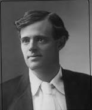

Jack London
12 Ocak 1876’da San Francisco’da doğdu. Gerçek adı John Griffith Chaney’dir.
Evlilik dışı bir çocuk olarak dünyaya gelen Jack London, soyadını, henüz
sekiz aylıkken annesinin evlendiği John London adlı savaş gazisinden aldı.
Maddi sıkıntılar nedeniyle küçük yaşta okulu bırakıp gazete satıcılığı,
tayfalık, balıkçılık, istiridye korsanlığı, gazetecilik, sahil koruma devriyeliği
gibi çeşitli işlerde çalıştı ve Amerikan işçi sınıfını tanıdı. 1894’te serserilik
suçlamasıyla otuz gün hapis yattı. Hapisten çıktıktan sonra hayatını değiştirmek
arzusuyla liseye kayıt yaptırdı. Lise öğrenimini bir senede tamamlayarak 1896 yılında
Kaliforniya Üniversitesi’ne girdi. Bir dönem okuyabildiği üniversiteden maddi
zorluklar sebebiyle ayrıldı. 1897’de Klondike bölgesinde altın arayanlara katıldı
ama bir yıl sonra yine yoksul ve işsiz olarak geri döndü. Yoğun bir çalışma programı
hazırlayarak şansını yazarlıkta denemeye karar verdi. Soneler, baladlar, nükteli
fıkralar, anekdotlar, korku ve serüven öyküleri yazmaya başladı. 1909’da yazdığı
Martin Eden bu dönemi yansıtması bakımından otobiyografik izler taşır. İlk kitabı
Kurt Dölü (1900) büyük ilgiyle karşılandı. Aynı yıl Elisabeth Maddern ile evlendi
ve bu evlilikten iki kızı oldu. Ancak bu beraberlik uzun ömürlü olmadı ve 1904’te
sona erdi. Charmian Kittredge ile ikinci evliliğin ardından 1910’da Kaliforniya’daki
çiftliğinde hayatını kaybetti. London yazarlık kariyeri boyunca elliye yakın kitap
yazdı ve döneminin en çok okunan yazarlarından biri oldu. Yazdıkları, yaşadıkları
etrafında şekillenmiş, sosyalizmin de etkisiyle toplumcu bir dünya görüşüne ulaşmıştır.
Başlıca eserleri arasında Beyaz Diş, Martin Eden, Uçurum İnsanları,
Vahşetin Çağrısı yer alır.